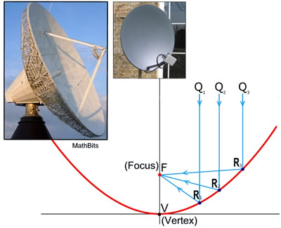
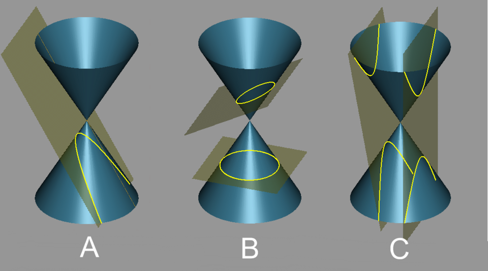

Fie g o dreaptă din plan și F un punct care nu aparține lui g. Parabola este locul geometric al punctelor M cu proprietatea d(M, g) = MF. Punctul F se numește focarul, dreapta g se numește directoarea, iar segmentul MF este raza focală a punctului M.
Parametrul parabolei
p = d(F, g)
Distanța de la focar la directoare se numește parametrul parabolei. El măsoară „deschiderea” curbei și apare în toate formulele care urmează.
Observație
Pe grafic, M este mobil: oricât l-ai deplasa pe curbă, raza focală MF (albastru) rămâne egală cu distanța la directoare d(M, g) (verde) — exact proprietatea din definiție.
parabolaraza focală MFd(M, g)directoarea gfocarul Fp = d(F, g)M — punct mobil (se trage)
p2
yM2.4
11.4.1 — de la definiție la desen
Procedeul de construcție
Construcția cu rigla și echerul
Se așază o riglă de-a lungul directoarei g. Pe riglă punem cateta mică a unui echer; de vârful unghiului ascuțit opus ei legăm o ață de lungime egală cu cateta mare, iar celălalt capăt îl fixăm în focarul F. Deplasând echerul de-a lungul riglei și ținând ața întinsă cu vârful creionului M lipit de cateta mare, vârful creionului descrie o parabolă.
De ce funcționează
Cateta mare este perpendiculară pe riglă, deci pe directoare. Fie L lungimea ei (= lungimea aței). Creionul M împarte ața în MB (de-a lungul catetei) și MF (întins spre focar), cu MB + MF = L. Dar de-a lungul catetei avem și d(M, g) + MB = L. Scăzând, obținem MF = d(M, g) — chiar definiția parabolei.
Observație
Animat alături: echerul alunecă pe riglă, iar M rămâne mereu pe curbă. Este traducerea fizică, punct cu punct, a egalității d(M, g) = MF.
rigla = directoarea gecherul (cateta mică pe riglă)ața: B → M → F (lungime L)focarul FM — vârful creionuluiparabola descrisă
De la geometrie la algebră
Ecuația carteziană a parabolei
Teorema 11.147
y² = 2px
Alegem reperul xOy cu originea la mijlocul distanței dintre F și g, cu Oy paralelă cu g. Atunci focarul este F(p/2, 0), directoarea g este x = −p/2, iar M(x, y) aparține parabolei dacă și numai dacă y² = 2px.
Demonstrație
M(x, y) ∈ P ⟺ d(M, g) = MF ⟺ d²(M, g) = MF². Distanța la directoare este x + p/2, iar MF² = (x − p/2)² + y². Deci: (x + p/2)² = (x − p/2)² + y² x² + px + p²/4 = x² − px + p²/4 + y² Reducem termenii comuni și obținem y² = 2px.
Ecuații parametrice și explicite
Parametric: x = t²/(2p), y = t, cu t ∈ ℝ. Explicit, parabola este reuniunea graficelor a două funcții: y = √(2px) și y = −√(2px), f : [0, ∞) → ℝ — adică P = Gf ∪ G−f. (Parabola nu este graficul unei funcții y = f(x): pentru x > 0 are două ordonate.)
O — vârful (origine)F(p/2, 0) — focarulg: x = −p/2 — directoareaM(x, y) — punct al curbeiMFd(M, g) = x + p/2
Anatomia curbei
Elementele parabolei
Vârful și axele
Vârful O(0, 0) — punctul parabolei cel mai apropiat de directoare. Ox = axa transversă (axa de simetrie a curbei); Oy = axa netransversă (tangenta în vârf).
Focar și directoare
Focarul F(p/2, 0) și directoarea g: x = −p/2 sunt simetrice față de vârf, fiecare la distanța p/2 de el.
Interiorul și exteriorul
F(x, y) = y² − 2px
Cu funcția F(x, y) = y² − 2px: int(P) = { F(x, y) < 0 } este interiorul (regiunea ce conține focarul), iar ext(P) = { F(x, y) > 0 } este exteriorul. Evident int(P) ∩ ext(P) = ∅ și int(P) ∪ ext(P) ∪ P = întreg planul.
O — vârfulF — focarulg — directoareaparabolaint(P)rest — ext(P)
Observație — câte puncte comune?
Intersecția cu o dreaptă
Observație
Punctele comune ale unei drepte cu parabola sunt soluțiile sistemului format din ecuația dreptei și ecuația parabolei. Înlocuind y = mx + q în y² = 2px obținem o ecuație de gradul al II-lea — deci o dreaptă taie parabola în cel mult două puncte.
Mișcă panta m și ordonata la origine q; numărul punctelor comune trece prin 2 → 1 → 0, niciodată mai mult de două.
parabola y² = 2pxdreapta y = mx + qpuncte comunefocarul F
m0.5
q1
11.4.2 — dreapta tangentă
Tangenta prin dedublare
Tangenta în M₀
d: y·y₀ = p(x + x₀)
Fie M₀(x₀, y₀) un punct al parabolei. Ecuația tangentei în M₀ se obține prin dedublarea ecuației y² = 2px: înlocuim y² → y·y₀ și x → (x + x₀)/2. Panta tangentei este p/y₀.
Normala
y − y₀ = −(y₀/p)(x − x₀)
Dreapta care trece prin M₀ și este perpendiculară pe tangentă se numește normala, notată n. Panta ei este −y₀/p, opusul inversului pantei tangentei.
Verificare
Produsul pantelor: (p/y₀) · (−y₀/p) = −1, deci tangenta și normala sunt perpendiculare. Mută M₀ pe curbă pentru a vedea cum se rotesc amândouă.
parabola y² = 2pxtangentanormala (punctată)M₀ — punctul de tangență (se trage)focarul F
y₀2
Teorema 11.148 — proprietatea optică
Reflexia în focar
Teorema bisectoarelor
Tangenta și normala la parabolă în M₀ sunt bisectoarele unghiurilor determinate de suportul razei focale M₀F și de paralela prin M₀ la axa parabolei. Optic: razele paralele cu axa se reflectă toate prin focarul F.
Demonstrație
1) Fie A proiecția lui M₀ pe directoare, A(−p/2, y₀), și F(p/2, 0). Panta lui AF este −y₀/p, iar panta tangentei d este p/y₀, deci mAF · md = −1 ⇒ AF ⊥ d. 2) Din definiție M₀A = M₀F, deci triunghiul AM₀F este isoscel; cum AF ⊥ d, dreapta d este înălțime, adică d este bisectoarea unghiului AM₀F. 3) M₀A este paralelă cu axa, deci tangenta face unghiuri egale cu raza focală M₀F și cu paralela la axă — exact legea reflexiei.

Aplicații. Radiotelescoape, antene satelit, faruri auto, telescoape, cuptoare solare — reflectoare parabolice care concentrează razele paralele în focar.
imagine: mathbits.com
parabola = oglindarazele, în mișcarefocarul FP — punct de impactA — proiecția pe directoarePF (raza focală)PA ∥ axătangenta în P
p2.4
Geometrie prin limite
Cercul osculator
Definiție
cerc(P₋ₕ, P₀, P₊ₕ) h→0⟶ cerc osculator
P₀ = punctul de studiu, de parametru (ordonată) t; P₋ₕ, P₊ₕ = vecinii de pe curbă, la ordonatele t−h și t+h; h = pasul. Cercul osculator în P₀ = poziția limită a cercului prin cele 3 puncte, când h → 0. Raza lui, R, se numește raza de curbură; evoluta = locul geometric al centrelor C.
Teoremă și demonstrație — raza în vârf
1) Pe y² = 2px, luăm cercul prin vârful O(0, 0) și punctele simetrice (h²/2p, h), (h²/2p, −h). Din simetrie față de Ox, centrul e pe Ox: C(r, 0); raza = OC = r. 2) Punctul (h²/2p, h) e pe cerc ⇒ (h²/2p − r)² + h² = r². Dezvoltăm și împărțim la h²: r = p + h²4p ⇒ când h → 0 ⇒ R = p
Observație
Graficul folosește parabola y² = 2x (p = 1), deci în vârf R = p = 1 — raza de curbură în vârf este chiar parametrul. Demonstrăm exact doar raza în vârf; în afara lui, cercul și evoluta sunt prezentate ilustrativ.
parabola y² = 2xP₋ₕ, P₀, P₊ₕ — ordonatele t−h, t, t+hcercul prin ele + centrul Cevoluta (punctată)focarul Ft — ordonata lui P₀; h — pasul
t1.4
h1
Matematica greacă — metoda epuizării
Arhimede și 4/3
Teorema lui Arhimede — „Cvadratura parabolei”
Asegment = 43 · Atriunghi
Coardă = segmentul AB dintre două puncte ale parabolei; segment parabolic = regiunea dintre coardă și arc; triunghi înscris = ABV′, cu V′ = punctul arcului unde tangenta e paralelă cu coarda. Pe grafic: y² = x, A(1, −1), B(1, 1) ⇒ V′ = O(0, 0), Atriunghi = 1.
Demonstrație — în trei pași
1) Găsirea lui V′. Un punct al parabolei are forma (t², t). Panta coardei dintre (a², a) și (b², b) este b − ab² − a² = 1/(a + b). Panta tangentei în (t², t) este 1/(2t). Egalăm: 1/(2t) = 1/(a+b) ⇒ t = (a+b)/2 — V′ stă la mijlocul parametrilor. 2) Raportul ¼. Formula ariei pe coordonate dă, pentru triunghiul cu vârfurile la parametrii a, (a+b)/2, b, aria (b−a)³/8. Coarda se înjumătățește la fiecare pas ⇒ triunghiul nou are ((b−a)/2)³/8 = 1/8 din cel vechi; fiind câte două pe fiecare coardă ⇒ generația nouă = 2/8 = ¼ din precedenta. 3) Suma. A = T(1 + ¼ + ¹∕₁₆ + ⋯); suma progresiei geometrice cu rația ¼ este Sₙ = 1 − (¼)ⁿ⁺¹1 − ¼; cum (¼)ⁿ⁺¹ → 0, S = 11 − ¼ = 13/4 = 4/3 ⇒ A = 4/3 · T
parabola y² = xcoarda AB cu capetele A(1,−1), B(1,1)V′ = O — vârful triunghiului înscristriunghiurile — o nuanță pe generațien — numărul generațiilor de triunghiuripunctat (de la n ≥ 1): lema pe coarda a = 0, b = 1
generații n1
Perspectiva algebrică
Conica generală și matricea ei
Definiție
Ax² + Bxy + Cy² + Dx + Ey + F = 0
Conică = mulțimea punctelor (x, y) care verifică o astfel de ecuație de gradul al II-lea. A, B, C = coeficienții de grad II (x², xy, y²), nu toți nuli; D, E = coeficienții de grad I; F = termenul liber. În graficul alăturat: A, B, C variabili; D = 1, E = −5, F = 0 ficși.
scrierea matricială — XT·M·X = 0
[x y 1]AB/2D/2B/2CE/2D/2E/2Fxy1
X = vectorul-coloană cu componentele x, y, 1 (în dreapta); XT = transpusa lui X — același vector, scris pe linie (în stânga); M = matricea simetrică a coeficienților conicei.
Teoremă — clasificarea (o admitem)
Semnul lui B² − 4AC decide tipul: < 0 → elipsă; = 0 → parabolă; > 0 → hiperbolă. Intuiția: Ax²+Bxy+Cy² e pătrat perfect ⟺ B²−4AC = 0. Parabola = frontiera dintre elipsă și hiperbolă.

De ce „conice”? Sunt secțiuni printr-un con dublu: A — plan paralel cu o generatoare → parabolă; B — plan oblic, nesecant cu generatoarea → elipse; C — plan tăind ambele pânze → hiperbolă.
imagine: Wikimedia Commons
elipsă / cercparabolăhiperbolăA, B, C — coeficienți variabili; D, E, F — ficși
A1
B2
C1
Un fapt contraintuitiv
Toate parabolele sunt asemenea
Definiție
(x, y) ⟼ (λx, λy)
λ > 0 = raportul de asemănare. Transformarea de mai sus duce fiecare punct (x, y) al planului în punctul (λx, λy), deci înmulțește toate distanțele cu λ — un „zoom” uniform. Două figuri sunt asemenea dacă una este imaginea celeilalte printr-o astfel de transformare.
Teoremă și demonstrație
Oricare două parabole y² = 2px și y² = 2p′x sunt asemenea. Aplicăm zoom-ul X = λx, Y = λy unui punct de pe y² = 2px (deci y = Y/λ, x = X/λ): (Y/λ)² = 2p·(X/λ) ⇒ Y² = 2(pλ)·X ⇒ imaginea e parabola cu parametrul pλ. Alegând λ = p′/p, imaginea devine exact y² = 2p′x.
Observație
În figura alăturată: stânga — parabola y² = 2px într-o fereastră fixă, peste referința y² = 2x; dreapta — aceeași curbă privită cu zoom de raport λ = 1/p: imaginea coincide cu y² = 2x. Ca la cercuri, nu există parabole „mai late” — doar văzute de la altă distanță. La elipse proprietatea nu are loc: raportul semiaxelor este invariant la zoom.
y² = 2pxy² = 2x (reper, punctat)stânga: fereastră fixă; dreapta: aceeași curbă la zoom de raport λ = 1/p